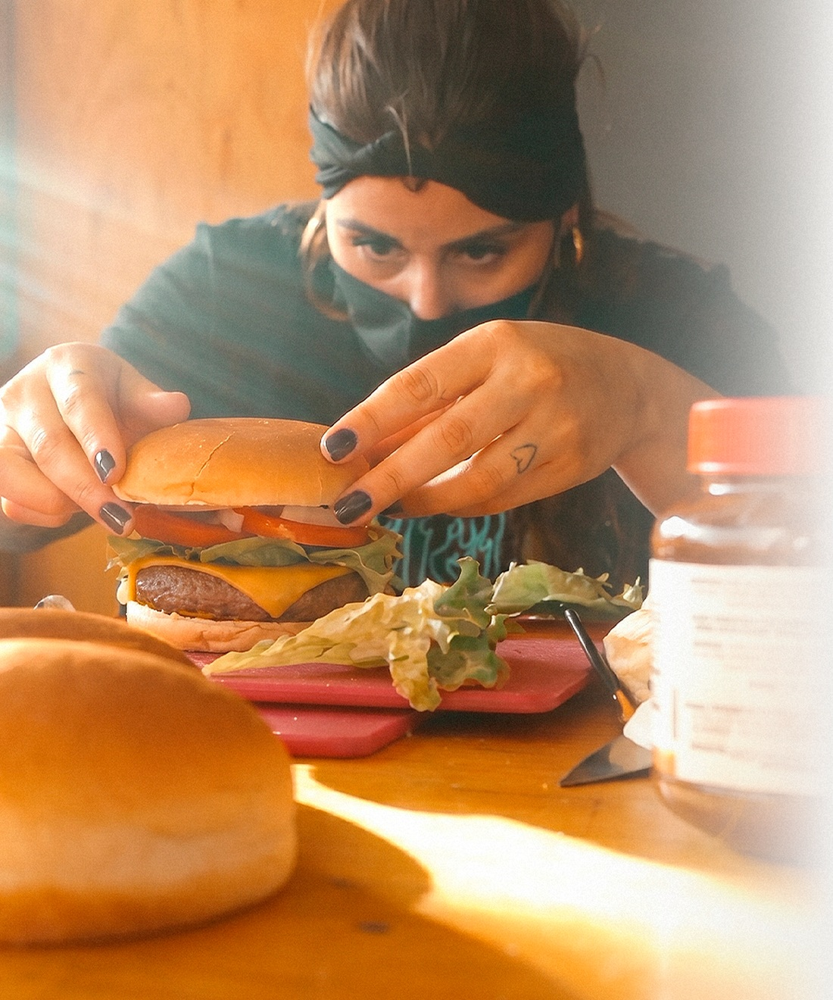
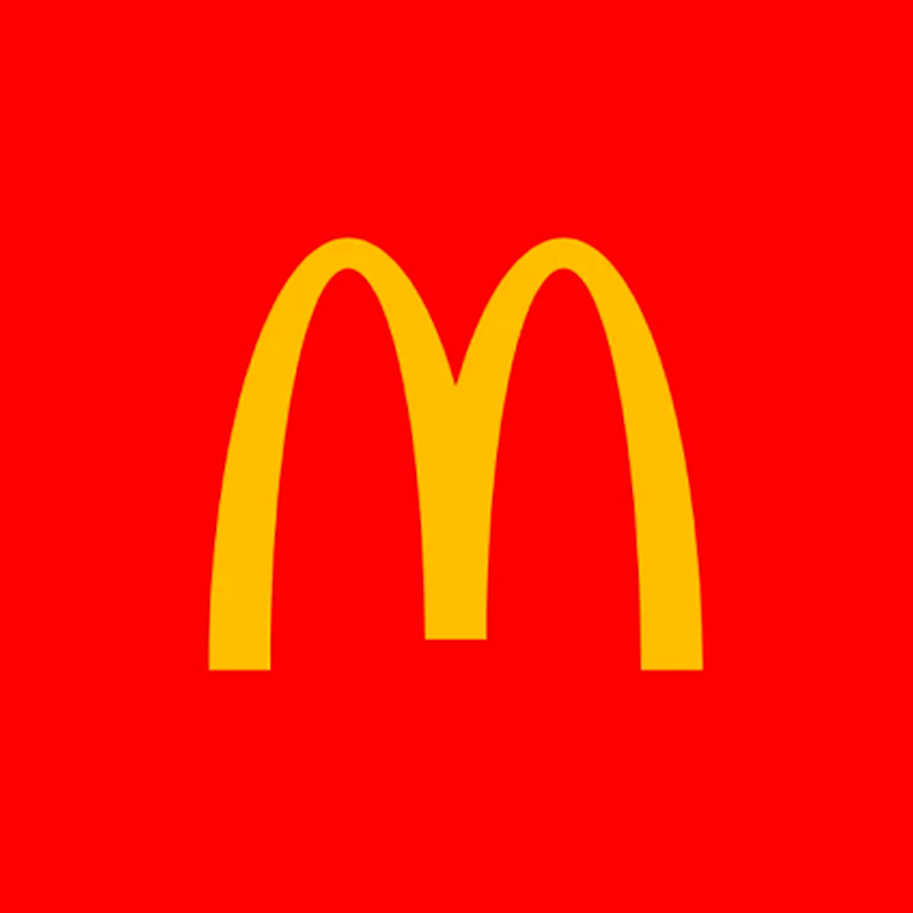
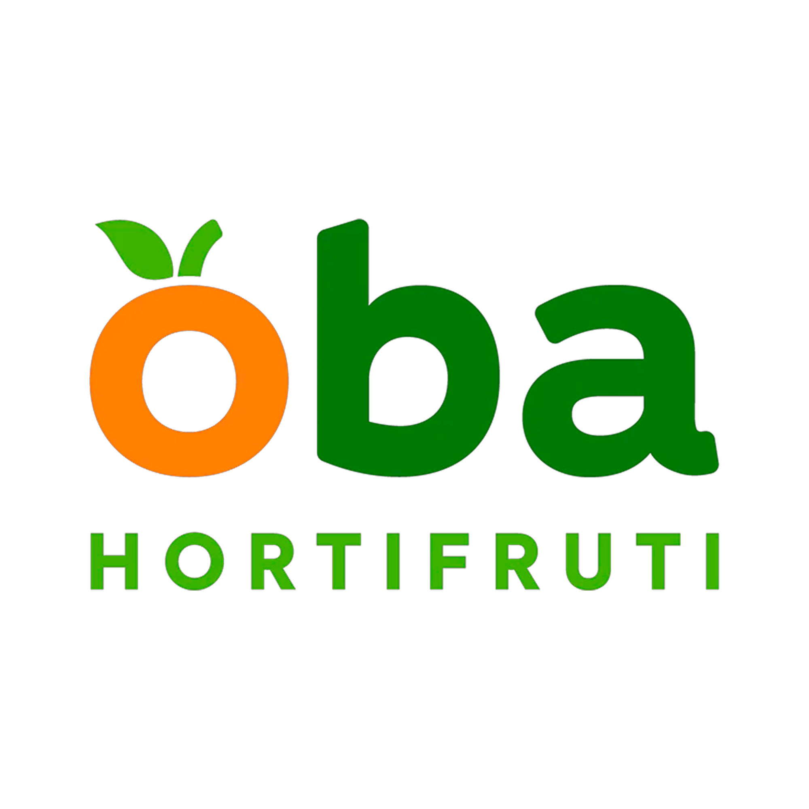
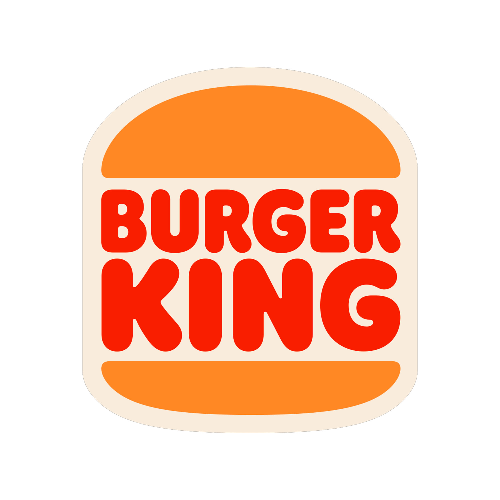
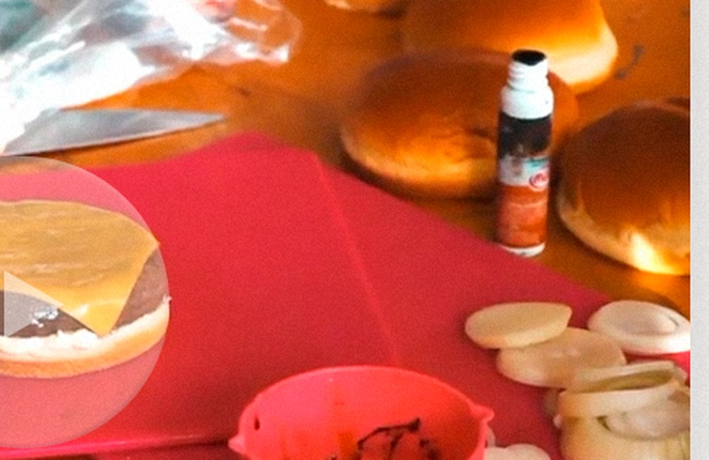
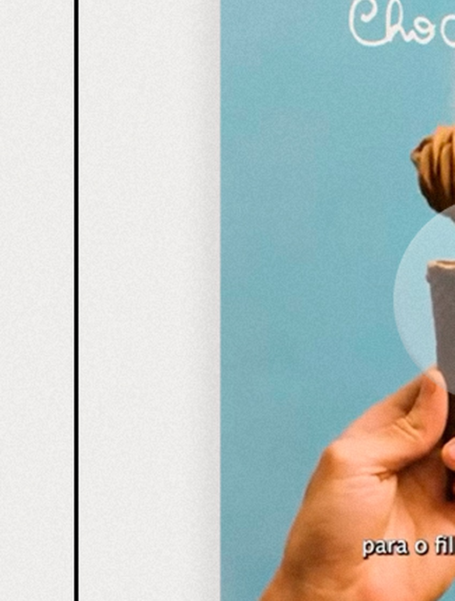

Direção Visual
Conceito, luz, composição e narrativa para marcas.
Food styling publicitário
Direção visual gastronômica para campanhas, marcas e experiências visuais.

Sobre
Sou food stylist e produtora gastronômica. Crio composições visuais que despertam desejo, valorizam marcas e transformam comida em experiência sensorial.
Meu trabalho une direção criativa, estética e estratégia para construir imagens memoráveis, do conceito ao set, da campanha ao conteúdo social.
Conceito, luz, composição e narrativa para marcas.
Preparos pensados para câmera, textura e duração.
Detalhes que fazem o produto parecer irresistível.
Portfólio
Campanhas, bebidas, sobremesas, lifestyle e social media com acabamento editorial.
Marcas
Um recorte visual das marcas e projetos que ajudam a sustentar a curadoria.



Serviços
Produto pronto para câmera, com textura, volume e apetite.
Execução e preparação dos elementos gastronômicos do set.
Conceito, paleta, composição, ritmo e linguagem de marca.
Imagens publicitárias com foco em desejo e performance visual.
Objetos, superfícies, gestos e contexto para contar uma cena.
Conteúdos verticais, campanhas de lançamento e narrativas rápidas.
Bastidores

Making of
MontagemVídeo
Um recorte do processo, da textura ao enquadramento, dentro de uma narrativa feita para câmera.